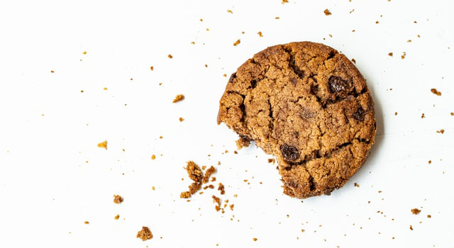

Cookies are most commonly baked until crisp or just long enough that they remain soft, but some kinds of cookies are not baked at all. Cookies are made in a wide variety of styles, using an array of ingredients including sugars, spices, chocolate, butter, peanut butter, nuts, or dried fruits. The softness of the cookie may depend on how long it is baked.
